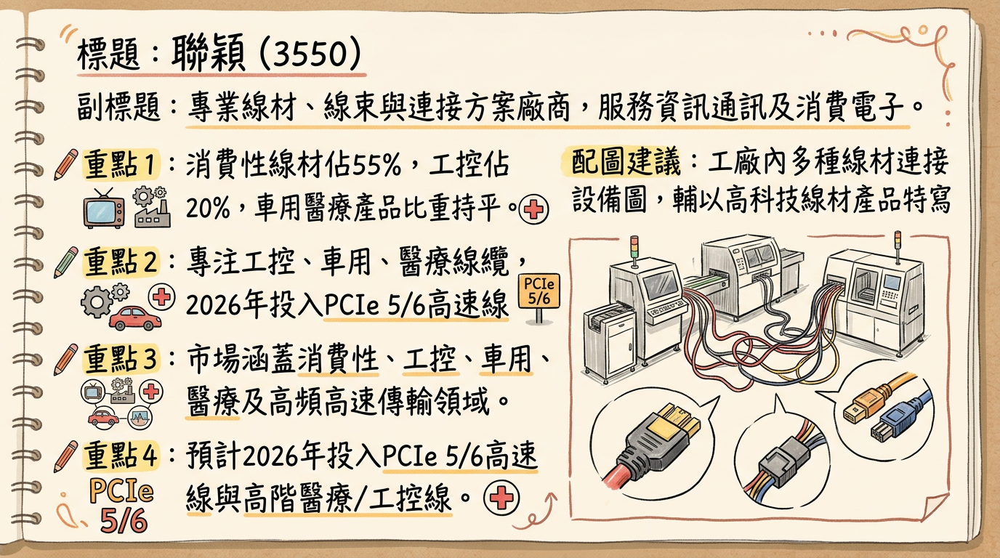
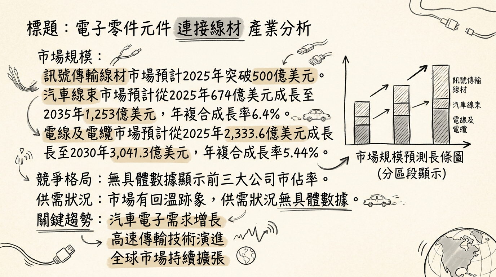
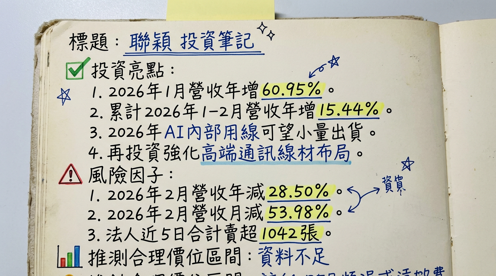

3550 聯穎 深度研究報告
一句話摘要
聯穎 (3550) 正經歷從消費性電子線材供應商轉型為AI、車用、醫療高階線束解決方案提供者的關鍵期，伴隨新產能到位與產品組合優化，2026年營運有望走出谷底，並朝高毛利結構發展，但短期仍面臨轉型陣痛與獲利能力考驗。
公司概覽
聯穎科技 (3550) 是一家深耕線材、線束與連接方案的專業廠商，總部位於新北市中和區。公司主要從事資訊、通訊、消費性電子、醫療、工業及自動化設備、汽車及伺服器用訊號傳輸線材及線組與塑膠製品的研發、製造與銷售。
產品線與未來發展：
聯穎產品範圍廣泛，涵蓋消費性電子線材、車用線束、工控線、醫療線與高頻高速傳輸線等五大領域。公司策略性地將研發重心專注於工業控制、車用及醫療三大領域。展望未來，聯穎將積極開發AI高速傳輸線、高階影音線及醫療用非侵入性線材，並預計於2026年投入PCIe 5/6高速線、醫療與工控線材市場，預期高毛利結構將逐步成形。
營收結構 (2025年上半年產品應用)：
| 產品應用 | 營收佔比 | 備註 |
|---|
| 消費性市場產品 | 55% | 較去年同期下降5% |
| 工業控制產品 | 20% | 較去年同期增長5% |
| 車用及醫療產品 | 持平 | |
| 產品類別 | 營收貢獻 (新台幣) |
|---|
| 傳輸線及線組 | 約11億元 (其中消費性佔60%，車用、工控、醫療佔40%) |
| 銅材 | 約3.5億元 |
| PVC塑膠 | 約3億元 |
聯穎科技擁有多個全球營運據點，總部設於新北市。海外製造基地主要分佈於中國及泰國，中國據點包括廣東深圳、東莞，江蘇崑山、吳江、東台，以及江西安福縣高新工業園。值得注意的是，東台廠與安福廠於2019年至2023年間自建並已投入營運。此外，泰國成品廠已於2024年投產，提升了全球供應能力。目前未找到各製造基地的具體營收貢獻比例數據。
核心競爭優勢
利基市場深耕與轉型： 聯穎長期耕耘連接線材市場，並積極從競爭激烈的消費性電子線材，轉型至高成長、高毛利的工業控制、車用及醫療線材。
高頻高速傳輸技術： 具備開發AI高速傳輸線、PCIe 5/6高速線及高階影音線的能力，符合未來5G、AI、大數據等趨勢對高速、穩定訊號傳輸的需求。
全球化生產佈局： 擁有多個中國及泰國製造據點，其中泰國廠已於2024年投產，東台及安福新廠全面運作，有效分散地緣政治風險並提升全球供應鏈彈性與效率。
客製化整合能力與品質認證： 在伺服器與車用客戶傾向選擇有量產紀錄與認證經驗的供應商背景下，聯穎累積的設計與製造經驗使其在客製化整合能力與品質穩定性上具備競爭門檻。
財務分析
月營收趨勢
聯穎2026年初營收表現強勁，但2月因季節性因素回落。
| 月份 | 金額 (新台幣億元) | 月增率 MoM | 年增率 YoY |
|---|
| 2026年2月 | 1.73 | -53.98% | -28.50% |
| 2026年1月 | 3.76 | 20.93% | 60.95% |
| 2025年12月 | 3.11 | -6.61% | 0.53% |
| 2025年11月 | 3.33 | 25.67% | -5.69% |
| 2025年10月 | 2.65 | -12.91% | -9.28% |
| 2025年9月 | 3.04 | 8.98% | 10.99% |
季度財務數據
2025年第三季財務數據顯示，聯穎的獲利能力仍處於虧損狀態，但毛利率相較2024年已有所改善。
*
累計營收 (截至2025年9月)： 新台幣26.23億元
* 每股盈餘 (EPS)： -0.18元 (季減5%，年減79%)
* 毛利率： 16.04%
* 營業利益率： -2.55%
* 稅後淨利率： -1.9%
年度營收與 EPS 趨勢
2025年營收略有增長，但仍處於虧損。
- 2024年全年營收： 34.20億元 (累計至12月)
- 2024年全年 EPS： -2.01元
- 2025年全年營收： 35.31億元
- 2025年全年 EPS： 累計至2025年第三季為-0.69元 (全年預估數未明確提供)
法說會重點
聯穎科技於2025年9月4日舉行線上法人說明會，公布以下重點：
- 2025上半年營運： 營收為17.4億元，年增7%。
- 產品應用營收佔比 (2025上半年)：
* 消費性市場產品：55% (較去年同期下降5%)
* 工業控制產品：20% (較去年同期增長5%)
* 車用及醫療產品：持平
- 產品策略與展望： 積極開發AI高速傳輸線、高階影音線及醫療用非侵入性線材。預計這些新產品將於2026年起逐步貢獻營收，其中醫療線纜因毛利較高，將成為重要成長動能。
- 財務結構優化： 公司預期2025年將持續優化財務結構，並計畫完成現金增資。
- 長期展望： 管理層長期看好全球線纜市場，並將透過財務穩健與產品結構優化，強化在車用、醫療及AI相關市場的競爭力。
券商觀點
截至2026年1月29日，券商針對聯穎的目標價資訊如下：
| 券商名稱 | 目標價 (新台幣元) | 評等 | 日期 (發布/更新) |
|---|
| 富果直送 | 17.5 | 買進 | 2025年12月18日 (最後更新2026年1月29日) |
富果直送報告預估聯穎2026年營收可達到40.7億元，年增17%，每股淨值將成長4.4%來到14.60元。該報告未明確給出2025或2026年的EPS預估數字，但預期2026年營運將走出谷底。目前未找到其他券商對聯穎2025-2026年EPS的具體預估數字。
財報深度分析
利潤率趨勢
聯穎的利潤率在2024年表現不佳，2025年有所改善但仍處虧損。
| 季度 | 毛利率 (Gross Profit Margin) | 營業利益率 (Operating Profit Margin) | 稅後淨利率 (Net Profit Margin After Tax) |
|---|
| 2024Q1 | 13.63% | -5.32% | -2.29% |
| 2024Q2 | 16.30% | -2.03% | -0.50% |
| 2024Q3 | 8.48% | -9.79% | -8.81% |
| 2024Q4 | 11.13% | -9.69% | -8.59% |
| 2025Q1 | 12.27% | -4.39% | -3.50% |
| 2025Q2 | 15.86% | -3.21% | -1.93% |
| 2025Q3 | 16.04% | -2.55% | -1.90% |
- 2025年上半年虧損擴大： 主要因子公司整頓及搬遷帶來的一次性費用影響，使得2025年上半年淨損0.4662億元，EPS為-0.51元。
- 產品結構優化： 2025年上半年營收年增7%，部分歸因於高毛利產品銷售比例提升。消費性市場產品佔比下降至55%，工業控制產品佔比增長至20%。醫療線纜作為高毛利產品，是未來重點發展領域。
- 折舊費用影響減輕： 公司因遷廠帶來的一次性費用多已認列完成，折舊預計在2025年結束，有利於未來獲利能力回升。
- 2026年展望： 預計2026年新廠稼動率提升，並投入PCIe 5/6高速線、醫療與工控線材等高毛利產品，營運有望逐步走出谷底。
存貨與營運分析
聯穎的存貨週轉天數在2025Q1達到高峰後有所下降，顯示存貨去化有改善趨勢。應收帳款週轉天數在2025Q1較高，後續雖有下降但Q3略有回升。
存貨金額與週轉天數：
| 季度 | 存貨金額 (新台幣千元) | 存貨週轉天數 (天) |
|---|
| 2024Q4 | 336,900 | 34.92 |
| 2025Q1 | 354,820 | 42.81 |
| 2025Q2 | 307,760 | 38.82 |
| 2025Q3 | 306,610 | 37.37 |
| 季度 | 應收帳款收現天數 (天) | 應收帳款週轉率 (次) |
|---|
| 2024Q4 | 111.18 | - |
| 2025Q1 | 131.76 | - |
| 2025Q2 | 113.47 | - |
| 2025Q3 | 116.83 | 0.7 |
- 存貨異常： 2025Q1存貨週轉天數上升，可能反映當時市場需求或存貨控管壓力，但後續兩季下降顯示去化改善。一份報告指出，2025年產量低於預期導致單位成本較高，可能使庫存成本上升。
資本支出與折舊攤銷
- 資本支出趨勢： 未找到聯穎(3550) 2023-2025年明確的年度資本支出詳細數據。然而，2025年第三季的資本支出呈現負值 (-186,812千元)，暗示可能有資產處分或收回。公司在2025年計畫透過現金增資改善財務結構，且2026年2月決議增資中國東台廠，強化高端通訊訊號傳輸線材與銅導體製造布局，顯示仍有長期資本投入規劃。
- 折舊攤銷趨勢： 2025年第三季折舊為38,446千元，攤銷為131千元。根據法人報告，聯穎的折舊於2025年結束，這表示前期較大的資本支出已逐漸攤提完畢，有助於未來獲利能力的改善。
其他財務重點
- 負債比率： 2025Q3負債總額佔資產總額比率為60.18%，較前一季的68.49%有所下降，顯示財務結構優化有初步成效。
- 自由現金流量： 2025Q3自由現金流為-112,575千元。2025年前9個月累計每股自由現金流為0.64元。儘管單季仍為負值，但2025年營運活動使用的現金淨額相較2024年略有改善，顯示實際資金運用效率正逐步提升。
- 業外收支： 2025Q2業外收支佔稅前淨利比高達-156.94%，顯示該季度業外虧損對稅前淨利產生顯著負面影響。但2025Q3已大幅改善至-14.62%。
股權異動
- 董監事/大股東申報轉讓： 未找到 2025-2026 年的最新申報轉讓資料。
- 庫藏股買回： 未找到 2025-2026 年的最新庫藏股買回紀錄。
- 可轉換公司債 (CB)： 未找到 2025-2026 年的最新可轉換公司債發行資料。
- 增減資計畫： 聯穎於2025年計畫透過現金增資以改善財務結構，降低負債比率，提升營運穩定性。此外，2026年2月11日公告，重要子公司HOTEK TECHNOLOGY CORPORATION及聯穎電線電纜有限公司董事會決議辦理現金減資事宜。
- 股利政策：
*
2025年： 預計於2025/10/27除權息，發放股票股利0.228元/股，無現金股利。
* 2024年： 未找到股利發放記錄。
* 2023年： 於2023/07/24除權息，發放現金股利0.5元/股，現金殖利率3.12%。
產業分析
市場規模與成長
- 訊號傳輸線材市場： 2025年全球訊號傳輸線材市場規模預計將突破500億美元。另有報告指出，電線及電纜市場規模預計將從2025年的2,333.6億美元成長到2030年的3,041.3億美元，年複合成長率（CAGR）為5.44%。
- 汽車線束市場： 全球汽車線束市場預計從2025年的674億美元擴大至2035年的1,253億美元，年複合成長率達6.4%。短期預計從2025年的624億美元成長到2026年的653.2億美元，年複合成長率為4.7%，並預計到2030年市場規模將達到779.5億美元，年複合成長率為4.5%。
- 供需狀況： 目前沒有找到訊號傳輸線材或線束產業明確的供過於求或供不應求的具體數據。但聯穎2025年上半年營收成長7%，顯示市場有回溫跡象。
- 產業平均毛利率： 目前沒有找到訊號傳輸線材或線束產業的平均毛利率水準的具體數據。但聯穎2025年上半年營業毛利率為14%。
競爭格局
全球汽車線束市場前五大公司 (2025年)：
| 排名 | 公司名稱 | 全球市場份額 |
|---|
| 1 | 日本矢崎 | 18% |
| 2 | 美國李爾 | 12% |
| 3 | 寧波拓普 | 8% |
| 4 | 深圳東江 | 6% |
| 5 | 安徽江淮線束 | 5% |
| 公司名稱 | 股票代碼 | 2025年營收 (億元) | 2025年毛利率 | 2025年EPS (元) | 備註 |
|---|
| 信邦 | 3023 | 310.24 | 23.99% | 13.02 | 合併營收年減6.24%，毛利率減少0.92個百分點。 |
| 貿聯-KY | 3665 | 712.47 | 31.73% | 46.57 | 全年營收年增31.7%，毛利率年增3.52個百分點。 |
| 良維 | 6290 | 101.54 | 2025Q3為30.06% | 預估超過9元 | AI相關產品營收貢獻站穩50%以上，毛利率高於其他產品。 |
| 聯穎 | 3550 | 35.31 | 2025上半年為14% | 2025Q3為-0.18 | 全年營收年增3.23%。 |
聯穎科技的優勢在於長期耕耘連接線材市場，累積的設計與製造經驗，使其在高速傳輸規格、客製化整合能力與品質穩定性上具備一定門檻。伺服器與車用客戶傾向選擇有量產紀錄與認證經驗的供應商，這是聯穎切入AI伺服器與電動車供應鏈的重要基礎。聯穎在中國、泰國擁有多個製造據點，銷售市場涵蓋台灣、中國、日本、歐美等地。
產業趨勢
高速傳輸與高功率需求： 5G、AI、大數據、電動車等發展，推動高頻高速訊號傳輸線材、高壓直流電（HVDC）集中供電與高電壓架構線組與連接器需求。線材從導通元件轉變為影響系統效能、功耗與穩定度的關鍵環節。
汽車電子電氣架構升級與電動化： 電動車（EV）市場快速成長，帶動高壓線束（電池、電驅、充電系統）、自動駕駛感測器網絡、車聯網等複雜資料傳輸需求。新能源汽車單車線束價值可達3000-8000元，遠高於傳統燃油車的1500-2000元。
智能化、模組化與材料創新： 線束設計朝模組化、輕量化、3D製造自動化發展。鋁基線束與柔性印刷電路（FPC）有助於降低重量與成本。線束整合感測器、晶片，實現實時監測。
對聯穎的具體機會：
- AI高速傳輸線市場： 積極開發AI高速傳輸線，2026年投入PCIe 5/6高速線及AI內部用線，預期形成高毛利結構。
- 車用及醫療線材市場： 專注於工業控制、車用及醫療三大領域，醫療線纜（非侵入性、高毛利）將是未來重點。泰國廠、中國新廠提升全球供應能力，強化競爭力。
- 產品結構優化： 鞏固消費性電子影音線優勢，同時提升高階影音線及醫療用非侵入性高階傳輸線材占比，降低受消費性電子價格波動影響。
對聯穎的潛在威脅：
- 市場競爭激烈： 面臨國際大廠壟斷及中國本土企業崛起的雙重壓力。
- 原材料價格波動： 銅、鋁等金屬價格上漲可能影響利潤。
- 技術快速迭代： 需持續投入研發以應對快速變化的技術標準。
- 子公司整頓與搬遷： 曾導致2025上半年虧損擴大。
相關投資題材連結：
- AI (人工智慧)： 聯穎科技積極開發AI高速傳輸線，預計於2026年投入PCIe 5/6高速線材市場，搶攻AI伺服器所需的連接線與模組。
- 電動車 (EV)： 提供汽車用訊號傳輸線材及線組，並積極佈局車用線束。電動車市場帶動高壓線束（400V/800V電壓平台）需求。
近期催化劑
- 2026年03月05日： 公布2月營收1.73億元，月減53.98%，年減28.50%。累計1-2月營收5.49億元，累計年增15.44%。
- 2026年02月09日： 董事會決議將昆山廣穎電線盈餘再投資於中國子公司聯穎科技（東台），強化高端通訊訊號傳輸線材與銅導體製造布局；提及AI內部用線可望於2026年小量出貨。
- 2026年02月04日： 公布1月營收3.76億元，年增60.95%，月增20.93%，創近34個月單月新高，受惠去年春節假期及需求增加。
- 2026年01月30日： 產品與市場布局持續從消費應用拓展至工業、醫療及AI內部線等利基市場，AI內部用線已完成布署，目標2026年取得小量實績。
- 2025年12月18日： 法人報告指出，聯穎因遷廠帶來的一次性費用多已認列完成，折舊於2025年結束。預期2026年新廠稼動率提升並投入PCIe 5/6高速線、醫療與工控線材，高毛利結構形成，營運可望逐步走出谷谷底。
⭐ 成長動能時間軸
| 成長動能項目 | 具體事件描述 | 預計/實際時間 |
|---|
| 擴廠計畫 | 中國東台及安福新廠自建並投入營運 | 2019年至2023年 |
| 泰國成品廠投產 | 2024年 |
| 董事會決議增資中國東台廠，強化高端通訊訊號傳輸線材與銅導體製造布局 | 2026年2月 |
| 新客戶/新市場 | 聚焦車用、醫療及工業控制三大領域，並積極布局AI高速線 | 2025年持續，2026年起逐步貢獻 |
| 在醫療領域已與美國客戶配合生產Camera-link用線 | 2026年 |
| AI內部用線完成布署，目標取得小量出貨實績 | 2026年 |
| 資本支出增加 | 規劃透過現金增資改善財務結構 | 2025年 |
| 擬增資中國東台廠，為長期布局 | 2026年 |
| 產能擴充 | 泰國成品廠投產、中國東台及安福新廠全面運作，提升全球供應能力 | 2024年 |
| AI內部用線布署完成，暗示相關產能準備就緒 | 2026年 |
| 需求面 | 受惠終端市場需求回溫及高毛利產品銷售比例提升，營收成長7% | 2025上半年 |
| 工業自動化（編碼器、伺服馬達、控制器、機械手臂）對耐撓曲線、高頻傳輸線及拖鏈動態電纜的需求增長 | 持續性 |
| 車用領域受先進駕駛系統（ADAS）、自動駕駛及車聯網普及，車內資料傳輸需求激增，帶動高頻影音線纜需求 | 持續性 |
| 醫療用線纜應用於醫療床、超音波及診斷設備，需求穩定且毛利較高，預計貢獻營收 | 2026年起 |
| 順應AI發展趨勢，布局高速傳輸線產品，搶攻新興市場 | 2026年起逐步貢獻 |
| HDMI世代升級帶動消費性產品需求 | 持續性 |
2026 展望
成長動能：
聯穎2026年展望趨於樂觀，主要驅動力來自產品結構的持續優化和新興市場的布局。隨著2025年一次性費用與折舊的結束，以及新廠稼動率的提升，營運成本壓力將減輕。公司將聚焦於高毛利的車用、醫療及工業控制線纜，並積極搶佔AI高速傳輸線市場，預計PCIe 5/6高速線和AI內部用線將於2026年開始貢獻營收。醫療線纜（尤其是非侵入性產品）與美國客戶合作，將成為重要的獲利增長點。此外，中國東台廠的增資也將強化高端產品製造能力，為長期成長奠定基礎。
風險：
儘管成長動能明確，聯穎仍面臨多項風險。公司在2025年上半年仍處於虧損狀態（淨損0.4662億元，EPS -0.51元），且2025Q3的毛利率16.04%、營業利益率-2.55%、淨利率-1.9%顯示獲利能力尚未明顯改善。全球線材與線束市場競爭激烈，原材料價格波動仍是潛在威脅。此外，股價淨值比估值目前顯示昂貴，投資者需留意高檔換手與追價風險。自由現金流在2025Q3仍為負值 (-112,575千元)，顯示營運現金流狀況仍待強化。
投資結論
聯穎 (3550) 正處於轉型的關鍵期，雖然過去兩年受到產業逆風與內部調整影響而表現不佳，但多項積極訊號顯示其2026年有望迎來營運拐點。
營運谷底已過，轉型效益顯現： 聯穎2025年因遷廠導致的一次性費用及折舊已陸續認列完畢並預計於2025年結束。隨著新廠稼動率提升與產品組合優化（朝高毛利的工業控制、車用、醫療及AI高速線發展），2026年營運有望逐步走出谷底，從虧損轉向獲利。
明確的成長動能： 公司積極布局AI高速傳輸線、PCIe 5/6高速線、電動車線束及高階醫療線纜等高成長市場，並有具體時間表。例如，AI內部用線預計2026年小量出貨，醫療線纜將成為高毛利增長動能。這些新產品與新市場的導入，是聯穎實現營收與獲利結構轉型的關鍵。
全球化產能與客戶基礎： 泰國成品廠於2024年投產，中國東台及安福新廠全面運作，以及增資中國東台廠的計畫，顯示其全球生產布局逐步完善，有助於承接國際訂單與強化供應鏈韌性。與美國客戶在醫療領域的合作，也印證其在利基市場的實力。
財務結構改善與未來潛力： 公司透過現金增資計畫改善財務結構，降低負債比率，為未來的成長提供更穩健的資金基礎。儘管目前仍處虧損，但若高毛利產品出貨放量，獲利能力將顯著提升。
投資風險與建議： 儘管轉型前景看好，但聯穎仍面臨市場競爭、原材料價格波動、技術快速迭代以及獲利能力尚未穩定改善的風險。投資者應關注其後續季度財報，特別是毛利率與營益率是否持續提升。基於法人給予的17.5元目標價及公司轉型成功後的潛在價值，建議投資區間介於 16.5元至 20元，並密切觀察高毛利產品出貨進度及獲利能力實質改善情況。
本報告由 AI 自動產生，資料來源為公開網路資訊，僅供參考，不構成投資建議。產生時間：2026-03-06 15:07
📊 資訊卡


